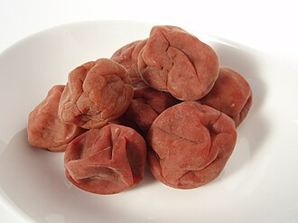

うめ（梅）の生産量 都道府県ランキング
全21県の順位と、とれた量
うめが日本でいちばん多くとれるのは和歌山県です。2万9,700 tで、全国（5万1,600 t）の58%を占めます。

| 順位 | 都道府県 | 収穫量 | 全国に占める割合 |
|---|---|---|---|
| 1位 | 和歌山県 | 2万9,700 t | 58% |
| 2位 | 群馬県 | 4,150 t | 8.0% |
| 3位 | 山梨県 | 1,210 t | 2.3% |
| 4位 | 宮城県 | 1,070 t | 2.1% |
| 5位 | 神奈川県 | 1,070 t | 2.1% |
| 6位 | 三重県 | 966 t | 1.9% |
| 7位 | 長野県 | 912 t | 1.8% |
| 8位 | 福井県 | 746 t | 1.4% |
| 9位 | 茨城県 | 706 t | 1.4% |
| 10位 | 大分県 | 692 t | 1.3% |
| 11位 | 青森県 | 675 t | 1.3% |
| 12位 | 福島県 | 638 t | 1.2% |
| 13位 | 愛知県 | 577 t | 1.1% |
| 14位 | 埼玉県 | 556 t | 1.1% |
| 15位 | 静岡県 | 503 t | 1.0% |
| 16位 | 栃木県 | 493 t | 1.0% |
| 17位 | 奈良県 | 482 t | 0.9% |
| 18位 | 広島県 | 456 t | 0.9% |
| 19位 | 福岡県 | 393 t | 0.8% |
| 20位 | 千葉県 | 341 t | 0.7% |
| 21位 | 徳島県 | 202 t | 0.4% |
この数字について
- 分類：バラ科
- 全国の収穫量：5万1,600 t
- この数字が表すもの：収穫量（畑や田でとれた重さ）
- 調査：作物統計調査 作況調査（果樹） 令和6年産
- 21県分を調査（調査していない県は順位に入りません）
うめの生産量について、よくある質問
- うめの生産量が日本一の都道府県はどこですか？
- 和歌山県です。作物統計調査 作況調査（果樹）（令和6年産）で2万9,700 tでした。
- うめの生産量ランキング2位・3位はどこですか？
- 2位は群馬県（4,150 t）、3位は山梨県（1,210 t）です。
- うめの生産量ランキング4位・5位はどこですか？
- 4位は宮城県（1,070 t）、5位は神奈川県（1,070 t）です。うめの全21県の順位は上の表のとおりです。
- うめの全国の生産量はどれくらいですか？
- 5万1,600 t（令和6年産）です。